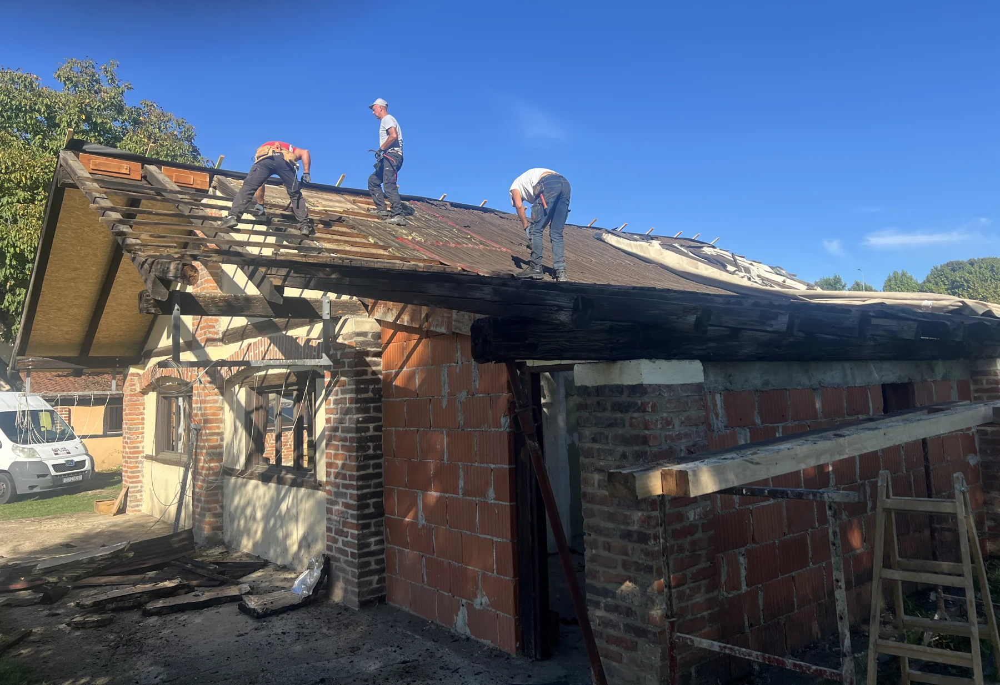
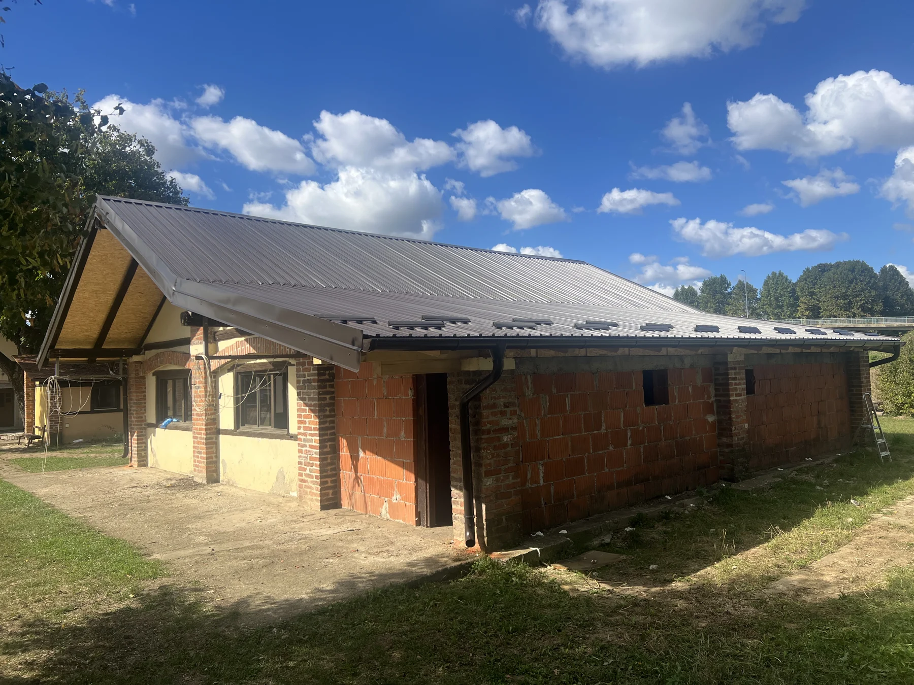
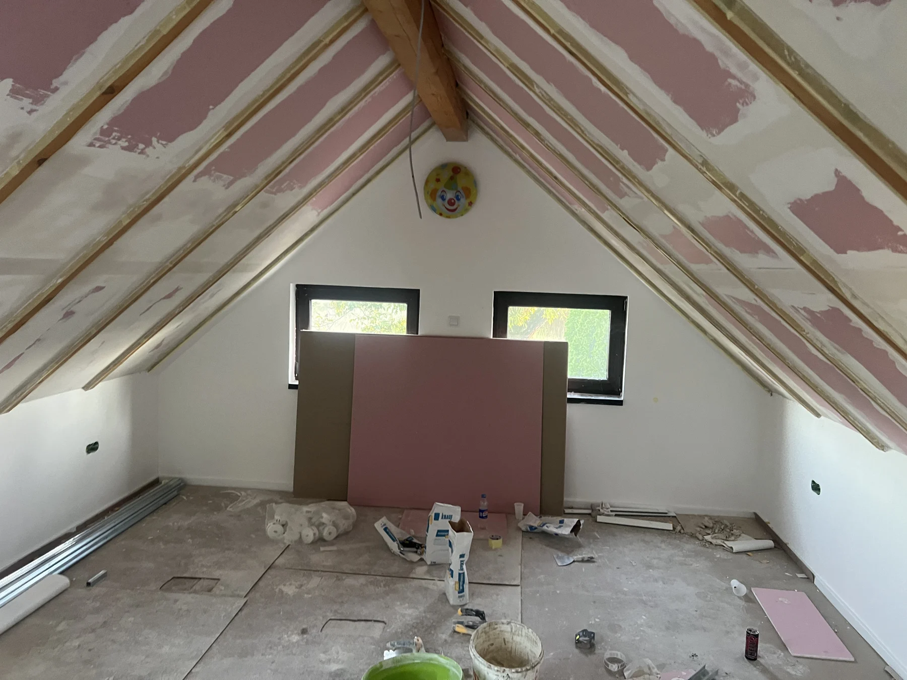

REFERENCA
Referenca — sadašnja privremena fotografija
Trenutačno se koristi za obje teme. Prikazana je radi usporedbe, bez preporuke da trajno ostane.
Položaj kadra: 50% 50% na svim širinama.
ZASEBAN FOTOGRAFSKI TEST
Usporedba fotografija iz arhive Varaždin. Postojeće stranice i fotografije na njima nisu promijenjene.
Usporedba kartica ↓Među 97 pregledanih fotografija iz ZIP arhive i postojećim fotografijama u assets nema dovoljno jasnog kadra za konačnu fotografiju energetskog projekta. Sadašnja privremena fotografija prikazana je u usporedbi ispod.
Fotografije krovova dokumentiraju obnovu. Nije potvrđeno da prikazuju predviđeno mjesto solarnog sustava, energetski pregled ili pripremu njegove ugradnje, pa ih ne predlažemo kao zamjenu za energiju.
Horizontalnu fotografiju stvarno nabavljene solarne opreme, po mogućnosti uz osobu koja je pregledava. Drugi koristan kadar bio bi obilazak potvrđenog mjesta buduće instalacije sa stručnom osobom i krovom u pozadini. Snimiti šire, bez rezanja ljudi, u mekom dnevnom svjetlu. Fotografija i opis ne smiju sugerirati da je sustav već instaliran.
FORMAT KARTICE · INDEX.HTML I PROJEKTI.HTML
Kartice koriste postojeću mrežu projekata i omjer fotografije 3 : 2.
REFERENCA
Trenutačno se koristi za obje teme. Prikazana je radi usporedbe, bez preporuke da trajno ostane.
Položaj kadra: 50% 50% na svim širinama.

INFRASTRUKTURA
IMG_9740.HEIC · Najbolji kandidat za obje projektne kartice i glavnu fotografiju infrastrukture. Jasno povezuje ljude i obnovu. Slabost: duboke sjene i tamni rub u izvorniku. Testna kopija skraćena je samo pri vrhu (260 px od 3024 px) kako bi se uklonio taj rub; bez filtara. Sva tri radnika ostaju u kadru.
Položaj kadra: 50% 65% na svim širinama.

INFRASTRUKTURA
IMG_9839.HEIC · Dobra pregledna fotografija infrastrukture za projektnu karticu ili dokumentiranje napretka. Slabost: nema ljudi, pa je slabija glavna fotografija od A. Ne prikazuje solarne panele i nije dokaz pripreme tog krova za solarni sustav.
Položaj kadra: 50% 55% na svim širinama.

INFRASTRUKTURA
IMG_9853.HEIC · Preporuka za sekundarnu fotografiju i dnevnik napretka unutar projekta. Jasno pokazuje stvarno uređenje prostora. Slabost: nema ljudi, kadar je dokumentaran i slabije predstavlja razvoj cijelog centra. Namjenu ove prostorije ne pretpostavljamo.
Položaj kadra: 50% 50% na svim širinama.
FORMAT POJEDINAČNE PROJEKTNE STRANICE
Za infrastrukturu: kandidat A. Kandidati B i C korisni su kao dokumentacija napretka. Za energiju: snimiti novu, tematski potvrđenu fotografiju.
Ovo je samo usporedba. Nijedan kandidat nije postavljen na postojeće projektne stranice ili naslovnicu.
Natrag na postojeći pregled projekata →